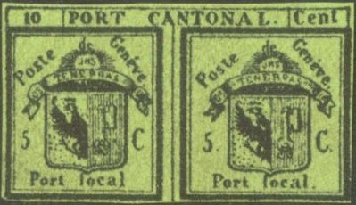
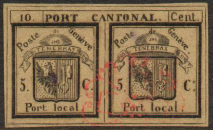
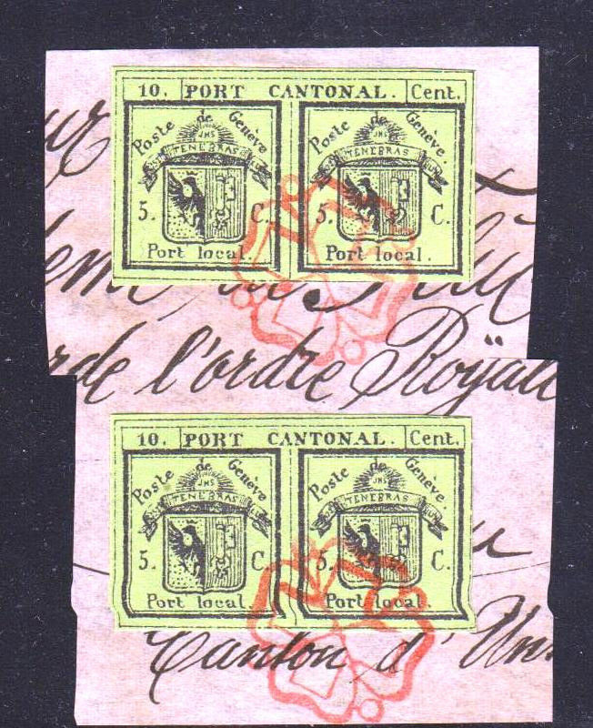

Forgeries with overprint 'FACSIMILE', from the same forger most likely Champion. According to De Reuterskiöld in The Philatelic Record 29, page 97 (1907), it was made in 1888, there are no stops behind both words 'local'.
Return To Catalogue - Geneva forgeries, part 2 - Geneva forgeries, part 3 - Geneva (Switzerland) - Switzerland overview
Note: on my website many of the
pictures can not be seen! They are of course present in the
catalogue;
contact me if you want to purchase the catalogue.
Many forgeries exist of the stamps of Geneva, in the early 20th century already 15 forgeries of the double stamp and 34(!) forgeries existed imitating the larger stamps and the envelope (according to Album Weeds), they even exist printed on genuine paper obtained from the envelopes.
The first forgery of the double stamp seems to have appeared in 1865 and was ordered by a certain Curval of Geneva, using the same printer who made the genuine stamps (source: Schweiz. Philatelistische Nachrichten in February 1910 or http://briefmarken.ag/). Sorry, no picture available yet of such a Curval forgery.
The forger Fournier sold at least 2 different types of forgeries of the double eagle stamp.

Fournier forgery, type I
In type I (see image above), the 'C' of 'Cent' touches the upper frameline. The eagle's heads are white and the cross pattern in the keys almost totally missing. A second printing of this forgery seems to have been made, in which the 'R' of 'PORT' is broken. These forgeries exist on dark green and yellow green paper.
Forgeries with overprint 'FACSIMILE', from the same forger most
likely Champion. According to De
Reuterskiöld in The Philatelic Record 29, page 97 (1907), it was
made in 1888, there are no stops behind both words 'local'.

(Forgery with the left and right side identical; in the genuine
stamp left and right are slightly different)
Rather convincing forgeries of the double stamp:



Accents on 'e' too close to the 'e'.
And some other forgeries:


Forgeries in wrong colors, made by the same forger.

In this forgery, the leg of the eagle is pointing downwards,
instead of going upwards.


A Göckel - Champion forgery with two red rozettes, reduced size
The above Göckel - Champion forgery is photo-lithographed on too thick paper. The size of the stamp is too small compared to a genuine stamp. I have no further information concerning this forgery.

Some Fournier forgeries, here in the wrong color, green instead
of black on green.

A Mercier forgery (image obtained from Verband Schweizerischer
Philatelisten-Vereine VSPhV.
Example a Sperati (a famous forger of the 20th century) forgery:

(Sperati forgeries on letter)
Sperati made two types of forgeries, 'Reproduction A' and 'Reproduction B'. Reproduction 'A' consists of the whole double stamp, while Reproduction 'B' only has the right hand side of the double stamp.

Sperati 'Reproduction A'


Front and backside of a Sperati Reproduction 'B'
Reproduction 'B', there is a white spot in the thick frameline just below the 'T' of 'NTONAL'.
Sperati also made forgeries of the large eagle issue (one type) and the small eagle (one type). He is also known to have made die-proofs of his 'products'. Sperati did not make a forgery of the envelope stamp.
Peter Winter also made forgeries (about 1980), example of such forgeries on a letter:
(Peter Winter forgery on letter, reduced size)

Part of the same letter(!) with Winter forgeries.
Peter Winter also offered forgeries of stamps off letter, examples (note the very peculiar cancel on the second stamp):
(Peter Winter forgeries)
I think the following items are forgeries as well:

(Reduced size)

A Menke-Huber postcard with replicas
of Geneva, Zurich,
Vaud and Basel.
The firm Henry Heller also issued the same cards.
A Menke-Huber postcard with replicas of Geneva
and arms of this city.

Possibly a cut from the above poscard. The tail of the eagle is
too fat.
A Tobler Facsimile. These facsimiles exist cut out:


{kind=link}
{kind=link}
{kind=link}
{kind=link}
{kind=link}
{kind=link}